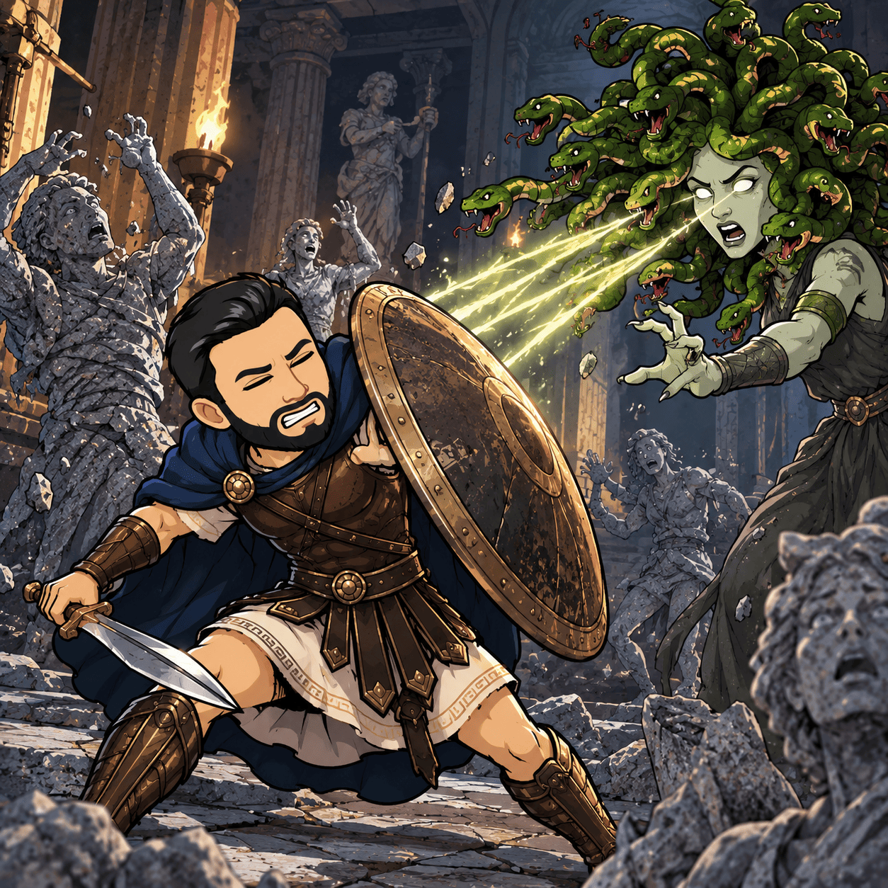
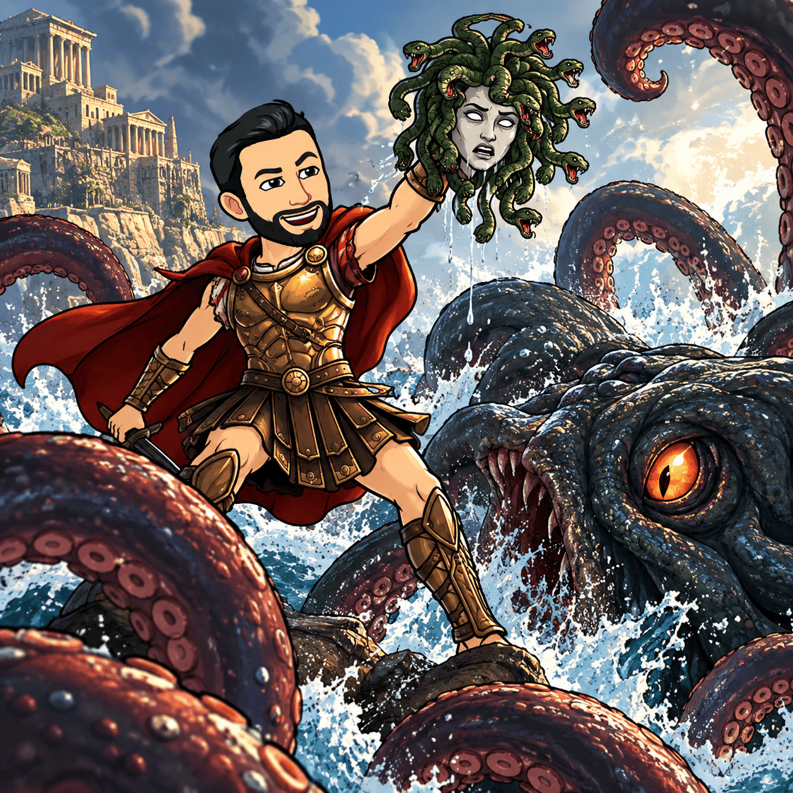
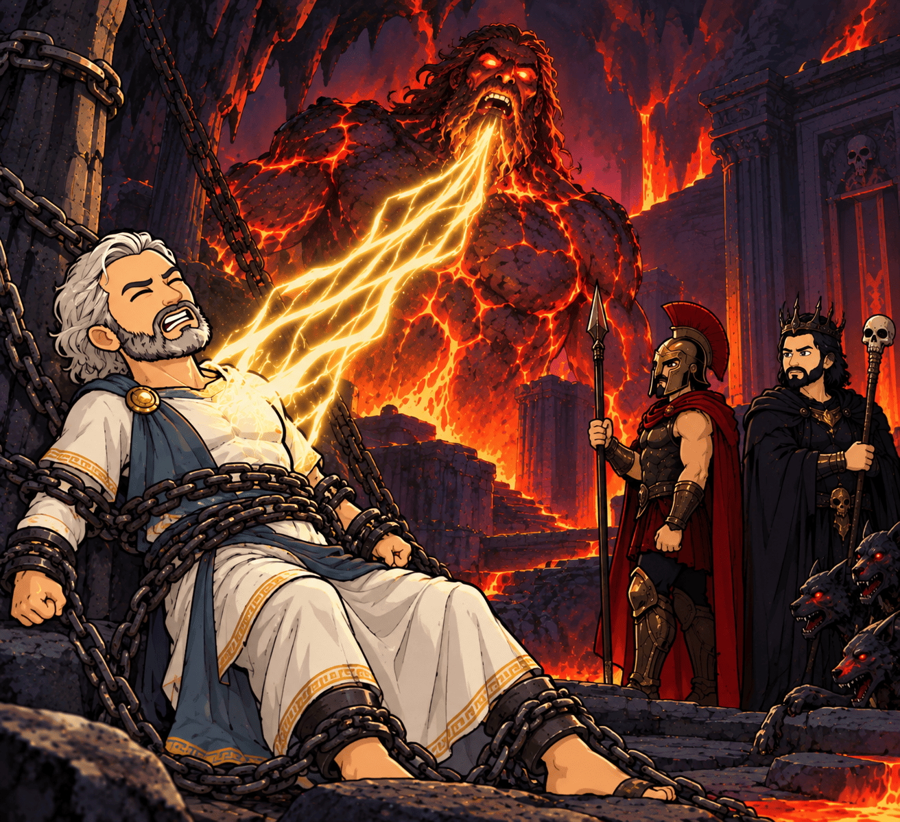
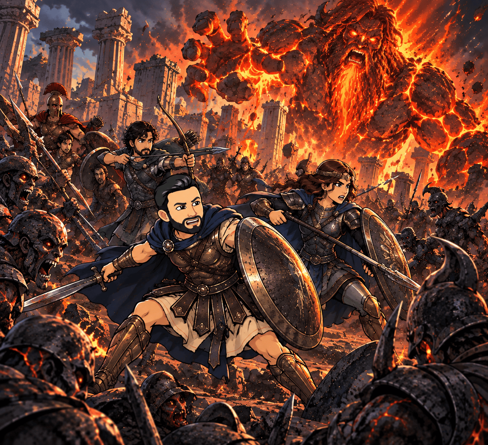
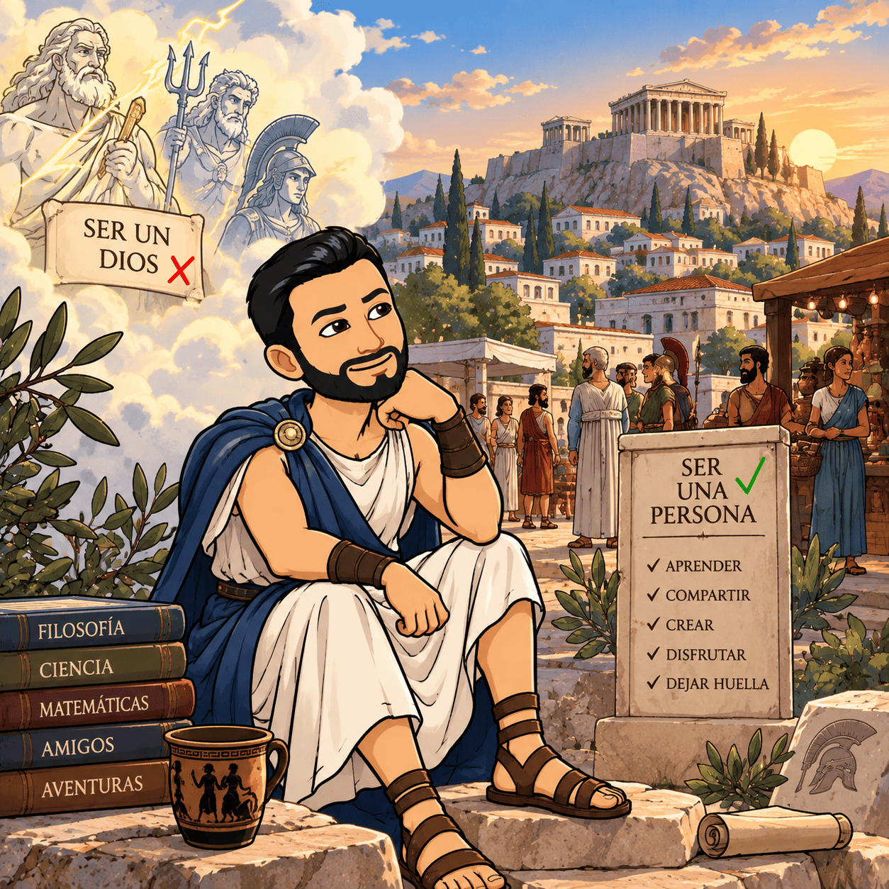
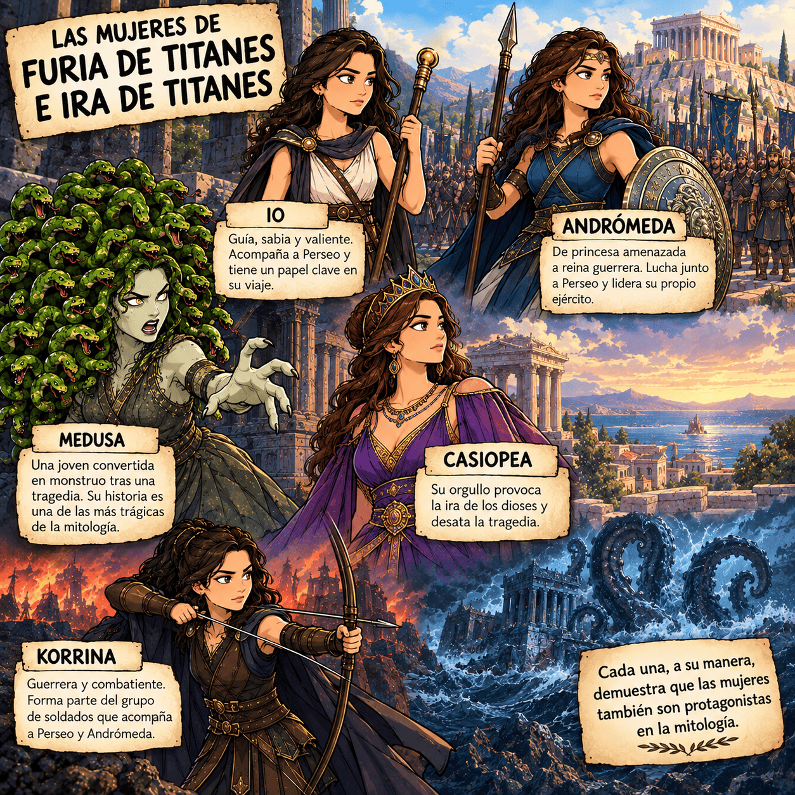

La historia de Furia e Ira de Titanes
🌊 1. Furia de titanes (2010)
La historia comienza en un mundo dominado por los dioses del Olimpo. Zeus, Hades y Poseidón son hermanos y, junto con otros dioses, controlan el destino de los seres humanos. Sin embargo, los humanos están empezando a rebelarse: ya no temen ni respetan a los dioses como antes.
El nacimiento de Perseo
Perseo es hijo de Zeus y una mujer mortal (Dánae), aunque crece sin conocer realmente su origen divino. Cuando todavía es un bebé, su madre y él son arrojados al mar dentro de un cofre por orden del rey Acrisio.
Perseo sobrevive y es criado por una familia de pescadores.
Años después, Perseo presencia una tragedia que cambiará su vida. Los soldados de Argos destruyen una estatua de Zeus y desafían abiertamente a los dioses. Como castigo, Hades aparece y provoca una terrible destrucción.
Perseo pierde a su familia adoptiva y descubre que, en realidad, es un semidiós.
☠️ Hades y el monstruo del inframundo
Hades tiene un plan: utilizar el miedo de los humanos para recuperar el poder de los dioses. Para ello amenaza a Argos con liberar al Kraken, una criatura gigantesca capaz de destruir la ciudad.
Los habitantes tienen muy poco tiempo.
La única forma de evitar la destrucción es entregar a Andrómeda, princesa de Argos, al Kraken.
Perseo se niega a aceptar ese destino y decide enfrentarse a los dioses y a las criaturas que protegen sus secretos.
🐍 El viaje de Perseo
Perseo emprende una peligrosa aventura acompañado por un grupo de guerreros. Durante el viaje se encuentra con criaturas de la mitología griega y descubre que enfrentarse a los monstruos no consiste solamente en utilizar la fuerza.
Uno de los momentos más impresionantes llega cuando el grupo se enfrenta a Medusa, la criatura con cuerpo de mujer y serpientes en lugar de cabello.
Medusa puede convertir en piedra a cualquiera que mire directamente sus ojos.
Perseo utiliza su inteligencia: en lugar de mirarla directamente, observa su reflejo y consigue acercarse hasta ella.
Finalmente, logra derrotarla y utiliza su cabeza como arma.

🦂 Una última batalla
Después de superar otros peligros, Perseo regresa a Argos. El tiempo se acaba y el Kraken está a punto de ser liberado.
Hades intenta impedir que Perseo cumpla su misión, pero el semidiós descubre que la cabeza de Medusa puede ser la clave para derrotar al monstruo.
Cuando el Kraken emerge de las profundidades, Perseo se enfrenta a él mientras la ciudad observa aterrorizada.
En el momento decisivo, Perseo utiliza la cabeza de Medusa.
La mirada de Medusa convierte al Kraken en piedra.
Argos se salva.

⚡ El destino de Perseo
Perseo consigue derrotar al monstruo y salvar a Andrómeda. Además, se enfrenta a Hades y consigue devolverlo al inframundo.
Aunque podría vivir como un dios, Perseo decide seguir siendo humano.
Zeus le revela que todavía le queda un papel importante en el mundo.
🔥 2. Ira de titanes
Han pasado varios años (10 más concretamente) desde la batalla contra el Kraken.
Perseo vive como un hombre mortal y ha formado una familia. Tiene un hijo llamado Helio.
Pero la paz no durará mucho.
Los dioses están perdiendo poder porque los seres humanos han dejado de creer en ellos. Y cuanto menos creen los humanos en los dioses, más débiles se vuelven.
⚡ Los dioses están en peligro
Zeus intenta advertir a Perseo de que algo terrible está a punto de suceder.
Los antiguos Titanes, enemigos de los dioses olímpicos, siguen encerrados en el Tártaro, una prisión situada en las profundidades del inframundo.
El más peligroso de todos es Cronos, padre de Zeus, Hades y Poseidón.
Cronos quiere escapar.
Y si lo consigue, el mundo entero estará en peligro.
🏛️ Una traición en el Olimpo
Zeus necesita la ayuda de Perseo, pero la situación se complica cuando Hades se alía con Ares, hijo de Zeus y dios de la guerra.
Ambos quieren liberar a Cronos.
Para conseguirlo, traicionan a Zeus y lo llevan hasta el Tártaro.
El objetivo es utilizar el poder de Zeus para despertar al Titán.
Perseo comprende entonces que ya no se trata de salvar una ciudad.
Esta vez está en juego el destino de toda la humanidad.

🗡️ Perseo vuelve a la batalla
Perseo abandona su vida tranquila y vuelve a convertirse en guerrero.
En su aventura se cruza con Andrómeda, que ahora es una reina guerrera, y al semidiós Agénor, descendiente de Poseidón.
Juntos deberán encontrar una forma de llegar hasta el Tártaro.
Pero el camino está lleno de criaturas monstruosas.
🐴 El monstruo de tres cabezas
Uno de los primeros grandes enemigos es una criatura gigantesca que ataca a Perseo y sus compañeros.
La batalla demuestra que Perseo ya no es solamente el joven que derrotó al Kraken.
Ahora es un guerrero experimentado que sabe que para sobrevivir necesita combinar valor, inteligencia y trabajo en equipo.
🏚️ El laberinto y el Tártaro
El grupo consigue llegar hasta un enorme laberinto construido por Hefesto.
El laberinto es una auténtica pesadilla: sus caminos cambian y los héroes deben avanzar entre trampas y peligros.
Finalmente llegan hasta el Tártaro.
Allí descubren que Zeus está prisionero y que Cronos está recuperando su poder.
Perseo consigue liberar a Zeus, pero la amenaza no ha desaparecido.
🌋 El despertar de Cronos
Cronos finalmente despierta.
El Titán aparece como una gigantesca criatura de fuego y lava.
Su objetivo es destruir el mundo de los humanos y recuperar el dominio que perdió miles de años atrás.
Los dioses intentan detenerlo, pero son demasiado débiles.
La batalla parece perdida.
Entonces Perseo comprende que no puede enfrentarse a Cronos únicamente con una espada.
Necesita la ayuda de los demás.
⚔️ La batalla final
Perseo, Andrómeda, Agénor y sus aliados se enfrentan a las fuerzas de Cronos.
Mientras los guerreros luchan en tierra, los dioses se enfrentan al Titán.
Zeus y Hades, que habían sido enemigos durante buena parte de la historia, terminan luchando juntos.
Por un momento, los hermanos vuelven a estar unidos.
Finalmente, Perseo consigue llegar hasta Cronos.
Con ayuda de sus aliados y utilizando el poder de los dioses, logra atacar el punto débil del Titán.
Cronos es derrotado.
El mundo se salva.

🌅 El final
La victoria tiene un precio.
Los dioses han quedado debilitados y el mundo de los antiguos dioses está llegando a su final.
Perseo regresa junto a su hijo.
Ya no es simplemente el hijo de Zeus.
Es un héroe que ha elegido vivir como humano y proteger a quienes quiere.
La historia termina recordándonos una idea que aparece en las dos películas: ser un héroe no significa ser invencible; significa enfrentarse al peligro cuando sabes que tienes algo que proteger.

🧠 10 PREGUNTAS DE COMPRENSIÓN LECTORA
- ¿Quién es Perseo?
Explica quiénes son sus padres y cómo descubre su verdadero origen. - ¿Qué ocurre cuando los habitantes de Argos desafían a los dioses?
Explica qué hace Hades y qué consecuencias tiene para Perseo. - ¿Qué amenaza Hades lanza sobre Argos?
Indica qué criatura amenaza con liberar y qué exige para evitar su ataque. - ¿Por qué es tan peligrosa Medusa?
Explica qué poder tiene y qué estrategia utiliza Perseo para conseguir derrotarla. - ¿Cómo consigue Perseo salvar Argos del Kraken?
Explica qué objeto utiliza y qué le ocurre finalmente al Kraken. - Al comienzo de Ira de titanes, ¿por qué los dioses están perdiendo poder?
Explica qué relación existe entre la creencia de los seres humanos y el poder de los dioses. - ¿Quién es Cronos y qué pretende conseguir?
Explica quién es y qué podría ocurrir si consigue escapar del Tártaro. - ¿Qué personajes traicionan a Zeus en Ira de titanes y cuál es su objetivo?
Explica qué pretenden conseguir al llevar a Zeus hasta el Tártaro. - ¿Qué cambios ha experimentado Perseo entre la primera y la segunda película?
Compara su situación al comienzo de cada película. Puedes mencionar su familia, sus responsabilidades y su forma de enfrentarse a los problemas. - ¿Cómo termina la historia de Ira de titanes?
Explica qué ocurre con Cronos, qué consecuencias tiene la batalla para los dioses y qué hace Perseo después de la victoria.
La mujer en la Grecia clásica y en las películas de Furia e Ira de Titanes
Cuando estudiamos la Grecia clásica es importante recordar que no existía una única forma de ser mujer en toda Grecia. Las condiciones podían cambiar según la ciudad, la época, la familia y la posición social. Atenas y Esparta, por ejemplo, tenían algunas diferencias importantes.
En muchas sociedades griegas, especialmente en Atenas, las mujeres tenían menos derechos políticos y sociales que los hombres. No podían participar directamente en la política ni ocupar los mismos espacios públicos que los ciudadanos varones. Su vida estaba relacionada principalmente con la familia y el hogar, aunque esto no significa que todas las mujeres vivieran exactamente de la misma manera.
En general, las mujeres podían tener responsabilidades importantes dentro de la casa. Organizaban parte de la vida familiar, cuidaban de los hijos y podían controlar determinadas tareas económicas del hogar. Sin embargo, tenían menos libertad y poder político que los hombres.
Es importante diferenciar entre cómo era la vida de las mujeres reales y cómo aparecen las mujeres en los mitos. Las historias mitológicas presentan diosas y heroínas con poderes extraordinarios, pero eso no significa que las mujeres de la sociedad griega disfrutaran de esos mismos poderes o derechos.
Las diosas griegas
La mitología griega está llena de mujeres con características muy diferentes.
Atenea es la diosa de la sabiduría y de la estrategia. En La Odisea protege a Ulises y lo ayuda a tomar decisiones. Es especialmente interesante porque representa la inteligencia y la capacidad de utilizar la estrategia para resolver problemas.
Hera es la esposa de Zeus y una de las principales diosas del Olimpo. Está relacionada con el matrimonio y la familia.
Artemisa es la diosa de la caza y de la naturaleza. Aparece como una figura independiente y poderosa.
Afrodita representa el amor y el deseo. Su poder no está relacionado con la fuerza física, sino con su capacidad para influir en dioses y seres humanos.
Deméter está relacionada con la agricultura y la fertilidad de la tierra.
Hestia, por su parte, representa el hogar y el fuego doméstico.
Estas diosas muestran que la mitología griega podía imaginar a mujeres con poder, inteligencia, autoridad y capacidad de decisión. Sin embargo, debemos recordar que eran personajes religiosos y mitológicos, no un reflejo directo de la situación de las mujeres reales.

Las mujeres de Furia de titanes e Ira de titanes
En Furia de titanes (2010) e Ira de titanes (2012) encontramos varios personajes femeninos que tienen papeles importantes. Algunas son humanas, otras tienen características sobrenaturales y otras son criaturas de la mitología.
Aunque las películas están protagonizadas por Perseo y presentan muchas batallas, las mujeres no aparecen todas de la misma manera. Algunas necesitan ser protegidas, mientras que otras toman decisiones, luchan y participan directamente en los acontecimientos.
Io
Io es uno de los personajes femeninos más importantes de Furia de titanes.
Es una mujer misteriosa que acompaña a Perseo durante gran parte de su aventura. Conoce la historia de los dioses y de Perseo y actúa como una especie de guía para él.
Uno de los aspectos más interesantes de Io es que no es simplemente una acompañante del héroe. Tiene conocimientos que Perseo necesita y participa en las decisiones del grupo.
Además, Io tiene una historia relacionada con los dioses: ha recibido el castigo de vivir sin envejecer después de rechazar las intenciones de un dios.
Su relación con Perseo también es diferente de la típica relación entre un héroe y una mujer que necesita ser rescatada. Io acompaña a Perseo en su viaje y comparte con él muchos de los peligros.
Finalmente, muere durante la aventura, pero Zeus la devuelve a la vida cuando Perseo decide permanecer como humano en lugar de convertirse en dios.
La historia de Io permite reflexionar sobre una idea importante:
tener conocimientos, experiencia y capacidad para tomar decisiones también es una forma de poder.
Andrómeda
Andrómeda es la princesa de Argos en Furia de titanes.
Su situación es especialmente injusta: Hades amenaza con destruir Argos mediante el Kraken si Andrómeda no es entregada como sacrificio.
Por tanto, Andrómeda se convierte en una víctima de una decisión tomada por poderes que están por encima de ella. Su propia vida es utilizada como moneda de cambio para salvar a toda una ciudad.
Perseo intenta evitar que tenga que aceptar ese destino.
Sin embargo, Andrómeda no es presentada únicamente como una princesa que espera ser salvada. Al final de la película, después de que Perseo haya salvado Argos, es ella quien le propone que se convierta en rey y gobierne junto a ella.
Perseo rechaza esa posibilidad porque ha decidido seguir viviendo como humano.
Andrómeda representa así una situación muy interesante: una persona puede tener una posición social elevada y, al mismo tiempo, encontrarse sometida a decisiones que no controla.
Andrómeda, ahora convertida en la reina guerrera
En Ira de titanes, Andrómeda ha cambiado.
Ya no es solamente la princesa amenazada por el Kraken. Ahora es una reina que dirige un ejército y participa directamente en la lucha contra las fuerzas de Cronos.
Cuando Perseo necesita ayuda, Andrómeda se convierte en una de sus principales aliadas.
Viaja junto a Perseo y Agénor, se enfrenta a criaturas y participa en la batalla final contra Cronos.
Este cambio resulta especialmente interesante porque muestra que un personaje femenino puede evolucionar.
La Andrómeda de la primera película necesita ser protegida de un sacrificio impuesto por otros. La de la segunda película es una dirigente que organiza a sus soldados y participa en la defensa de la humanidad.
No ha cambiado solamente su situación: también ha cambiado su papel dentro de la historia.
Medusa
Medusa es probablemente el personaje femenino más complejo de las dos películas.
En Furia de titanes, aparece convertida en una criatura monstruosa con serpientes en lugar de cabello y un poder terrible: quien mira directamente sus ojos puede quedar convertido en piedra.
Perseo necesita enfrentarse a ella porque su cabeza es la única capaz de derrotar al Kraken.
Pero hay algo importante que debemos tener en cuenta: la película de 2010 no explica realmente cómo Medusa llegó a convertirse en ese monstruo.
Su historia de transformación pertenece a la tradición mitológica y existen diferentes versiones.
La trágica historia de Medusa
En una versión muy conocida, la que aparece en las Metamorfosis de Ovidio, Medusa era originalmente una joven de gran belleza.
Poseidón la agrede sexualmente en el templo de Atenea. Después, Atenea transforma su cabello en serpientes y convierte su rostro en algo capaz de petrificar a quien lo mire.
Esto hace que la historia de Medusa pueda interpretarse como una tragedia: una mujer que sufre una agresión y termina siendo transformada en el monstruo que después será temido y perseguido.


Es importante saber que esta versión no es la única versión del mito. En algunas tradiciones antiguas Medusa simplemente aparece como una de las Gorgonas, sin esta historia de transformación. Por tanto, no debemos presuponer que la historia de Ovidio conecta exactamente con (es una precuela de) la historia que cuenta la película.
En Furia de titanes, finalmente Perseo consigue derrotarla utilizando una estrategia: evita mirarla directamente y utiliza su escudo para observar su reflejo.
La historia de Medusa permite plantear una pregunta interesante:
¿Qué ocurre cuando una persona deja de ser vista como una persona y solamente es vista como un monstruo?
También permite reflexionar sobre cómo los relatos pueden convertir a un personaje en «bueno» o «malo» sin explicar todo lo que ha vivido anteriormente.
Casiopea
Casiopea es la reina de Argos y la madre de Andrómeda.
Su comportamiento es importante porque contribuye a desencadenar el conflicto de la primera película. Casiopea compara la belleza de su hija con la de las divinidades y, con ello, provoca la reacción de los dioses.
Hades la castiga y utiliza su muerte para mostrar a los habitantes de Argos el poder que tienen los dioses.
Casiopea representa, por tanto, el peligro de desafiar a un poder superior, pero también permite plantear una cuestión sobre la responsabilidad.
¿Hasta qué punto las decisiones de una persona pueden afectar a otras personas que no han participado en ellas?
Korrina
En Ira de titanes aparece también Korrina, una de las integrantes del grupo de soldados que acompaña a Perseo y Andrómeda.
Aunque tiene un papel más pequeño que Andrómeda, resulta interesante porque participa como combatiente dentro del grupo.
Sin embargo, su personaje también muestra algo diferente: en un momento determinado reza a Ares, y esto permite que él localice al grupo.
Su participación es breve, pero sirve para recordar que no todos los personajes femeninos de una historia tienen que ocupar el papel de princesa o de pareja del héroe. También pueden formar parte de un grupo de guerreros y participar en una aventura.
¿Qué imagen de las mujeres presentan las dos películas?
Las dos películas muestran personajes femeninos muy diferentes.
- Io representa el conocimiento, la experiencia y la capacidad de acompañar al héroe desde una posición activa.
- Andrómeda evoluciona desde una princesa cuyo destino es decidido por otros hasta convertirse en una reina que dirige un ejército.
- Medusa representa el personaje más trágico: una figura que ha sido convertida en monstruo y que, además, puede analizarse desde la diferencia entre la versión cinematográfica y las distintas versiones del mito.
- Casiopea muestra cómo las decisiones de una persona pueden desencadenar consecuencias para toda una comunidad.
- Korrina, aunque tiene un papel menor, muestra a una mujer integrada en un grupo de combatientes.
En conjunto, las películas permiten observar que los personajes femeninos no tienen todos el mismo poder ni desempeñan las mismas funciones. Algunas necesitan ayuda, otras ayudan al protagonista y otras participan directamente en la lucha.
Y hay una evolución especialmente interesante: Andrómeda pasa de ser el objetivo de un sacrificio a convertirse en una persona que lidera a quienes luchan contra Cronos. Esta evolución de Andrómeda nos lleva a la siguiente pregunta:
- ¿Una mujer tiene que ser una princesa, una compañera o alguien que necesita ser salvada para ser importante en una historia?
- Las dos películas permiten responder que no: también puede ser líder, guerrera, estratega, guía o un personaje con su propia historia.
